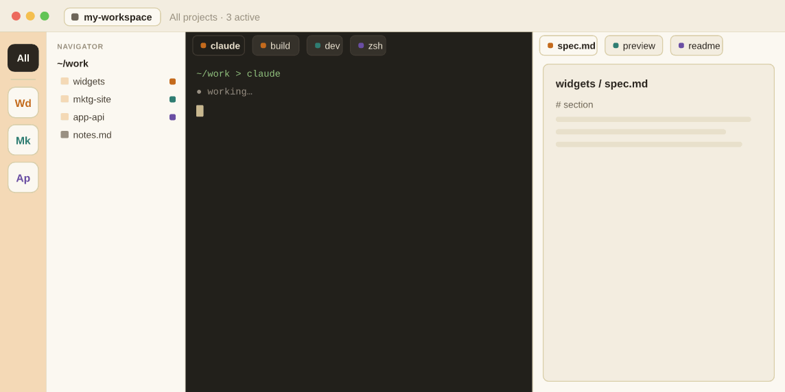
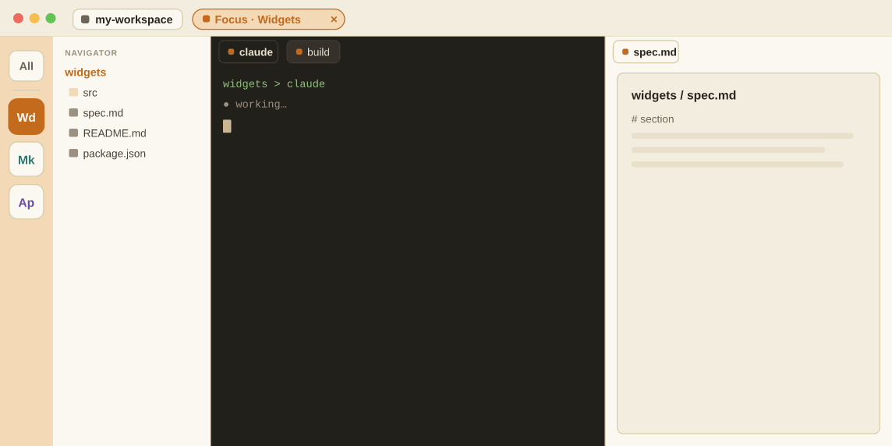
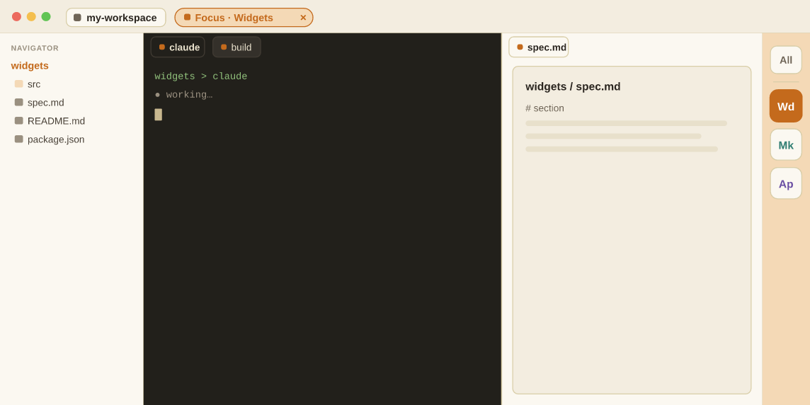

docs/prd/enh-182-project-centric-ux.md.
All twelve decisions below are answered (plus the
two rail-style decisions in the deep-dive). Several were refined
during the walk beyond the original radio options — the binding outcomes are
recorded here; the cards below carry per-decision Locked ✓
tags. This gate is closed. Build spec → the PRD + phased build plan at
docs/prd/enh-182-project-centric-ux.md (it names the exact
design assets each step must build against).
CLAUDE.md/.claude/
and you're actively working in it. Not a front-door gate on the app.CLAUDE.md/.claude/.
Right-click a folder in the navigator → "New project" just drops a
.claude/ (the declare action).
The refactor is unusually low-risk for one reason: there is nothing
to tear out. Duo has no Project object, no project
registry, and no project switcher. "Where am I" is answered by three
independently-computed signals that are only loosely linked, plus an
orthogonal "is Claude running" probe:
TabSession.cwd per-terminal-tab launch dir (each tab its own)
nav.state.cwd navigator root, localStorage ('duo.nav.cwd')
└─ follow-mode ──▸ moves to the active tab's cwd, UNLESS pinned
getGitStatus(cwd) on-demand `git rev-parse --show-toplevel`
└─ workTreeRoot, branch, dirty — recomputed per navigator folder
claudePresence process-tree probe: is the `claude` binary alive
in the front tab? (no-pty | shell | claude)
── orthogonal to all of the above ──
And today's "workspace" is not a runtime object either —
it's a thin named envelope (WorkspaceFile) wrapping the
session-restore snapshot (SessionState: a flat list of
terminals, browser tabs, file tabs, the navigator path, split state).
Switching workspaces force-flushes state, kills every PTY, tears down browser
tabs, and reloads the renderer. The switcher
(WorkspaceSwitcherDropdown.tsx, ENH-171) is a title-bar dropdown
with a recent list — exactly the chrome a project switcher would reuse.
What does not exist today (all confirmed in-tree):
Project type / registry / persisted list of known projects.~/.claude/projects/<encoded-cwd> or sessions-index.json (ENH-177 built it, then reverted pre-cut — not in the tree).CLAUDE.md parsing or marker-based "this folder is a project" classification. (ProjectClaudeContext only checks for the existence of CLAUDE.md / .claude / tasks.md / AGENTS.md to render a collapsible context group — cosmetic.)git remote get-url origin for "Open on GitHub" links).Upshot: a project primitive is a new first-class anchor that the three location signals would derive from — additive, not a rewrite. The hard part is product/UX, not plumbing. That's why the rest of this doc is mostly decisions, not code.
You named the biggest decision yourself: "should we let a user use Duo in arbitrary folders / repos / CC-dirs without declaring / creating / selecting a project?" Everything else hangs off this. The prior art is lopsided: the modern default (VS Code, Sublime, Zed, GitHub Desktop) is open a folder and that folder IS your project — zero ceremony. The heavier "you must create/import a project" models (JetBrains, Xcode) pay for richer per-project state with an explicit setup step that would land hardest on Duo's non-engineer PM.
But "no concept at all" is what Duo has now, and it's fragmented. The
middle path — progressive — lets you work instantly in any
folder, while gently offering to "remember this as a project" so the switcher,
per-project context, and one-click CLAUDE.md/git scaffolding
become available when wanted.
This sets the ceremony floor for every new user and every "just poke around this folder" moment. It also decides whether multi-project sessions are even expressible.
✓ Locked 2026-05-25 — projecthood gated, app open: work in any folder (a view-all state always exists); a folder becomes a project only if it's a git-repo root or has CLAUDE.md/.claude/ and you're working in it. A refinement of the radios below, not a clean match.
You asked specifically about the relationship between a Duo project, a GitHub repo, and a Claude Code project. They're four different things that usually — but not always — line up on the same folder:
A path on disk. Always exists. May or may not be a git repo; may or may not have a CLAUDE.md.
A folder with .git/. Has a work-tree root, branch, optional origin remote → a GitHub repo. Can be nested (repo-in-repo, submodules, monorepo).
Implicit: CC keys sessions/history off the cwd, stored at ~/.claude/projects/<encoded-cwd>. Plus CLAUDE.md / .claude/ as context markers.
A folder Duo has named and remembers, that knows about its repo and its CC dir but isn't defined by either. The anchor the three location signals derive from.
| Concept | Defined by | Duo knows it today? | Relationship to a "Duo project" |
|---|---|---|---|
| Folder | a path existing on disk | Yes — nav root + per-tab cwd | 1:1 — a Duo project is a folder (its root). The lowest common denominator. |
| Git repo | .git/ + work-tree root |
Partly — detects root/branch/dirty per cwd; parses remote URL; no API | Often the same folder, but: a project may have no git; a repo may contain several projects (monorepo); a project may span repos. Loose, not identity. |
| Claude Code project | cwd → ~/.claude/projects/<enc>; CLAUDE.md |
No — reverted ENH-177; no CLAUDE.md parsing | A Duo project's root cwd determines which CC project history applies. Declaring a Duo project is the natural moment to offer "add a CLAUDE.md." |
| GitHub repo | remote origin on github.com |
Partly — remote-URL string only | An attribute of a project's repo, not the project itself. Cloning one is a strong signal to create a project (see Decision 6). |
This decides what gets persisted, how creation works, and how PM-friendly the surface stays. Your instinct ("a project can be any folder; Duo then knows it might want CLAUDE.md/agents.md/git later, made easy but not mandatory") maps to the recommended option.
✓ Locked 2026-05-25: a project = a folder you're actively working in (a terminal CWD there, or non-pinned tabs/browsers opened from it) and that is a git-repo root or contains CLAUDE.md/.claude/. Deepest qualifying folder wins (D5). Right-click a folder → "New project" drops a .claude/. Refines "named-folder" below.
Four end-to-end window mockups for where the project switcher lives. First, today's baseline for contrast.
Today: the title-bar badge names a workspace; there's no project. Navigator root drifts to follow whichever terminal tab is active.
A: a ~50px rail of project tiles (letter/folder glyphs), active highlighted, + to add a folder, collapses to a hairline. Slack / Linear / VS Code-Activity-Bar idiom.
B: the project name lives where the workspace badge is today (extend WorkspaceSwitcherDropdown). Click → recent projects + "Open folder…" + "New project…". Optional breadcrumb project ▸ file. Zed / Notion / GitHub-Desktop idiom.
C: no persistent chrome — ⌘P opens a type-ahead over recent projects (+ "open folder"). Pairs with a small current-project chip in the title bar so it stays discoverable. Sublime / Tower / Linear-⌘K idiom. The research's lowest-risk primitive.
D: the title bar switches workspaces; a sub-strip switches projects within the active workspace. Tabs carry a project tag. Honors your "a workspace contains one-or-more projects" idea and makes multi-project sessions explicit. Xcode (workspace=pointer-list) idiom.
Mockups A–D above. These aren't fully exclusive — B and C compose well; A and D are bigger bets. Pick the v1 primary.
The directions above treat a project as a switcher — one active context you swap between. But the bigger UX win is to treat a project as a filter / lens over a multi-project workspace. The default (today's modality) stays: one workspace holds files, terminals, and canvas tabs from many projects, all at once. The new power is the ability to focus.
How it works. Every time you open a file that belongs to a
project — declared, or implicitly declared (the root of a GitHub repo
and/or a folder with CLAUDE.md / .claude/) — that
project is auto-added to a thin rail as a tile (initials of its first two
words). Clicking a tile enters focus mode: every terminal and
canvas tab not belonging to that project collapses away, and the
navigator re-roots to the project's folder. An always-present
All button releases the filter and brings everything back.
Focus is a non-destructive lens — nothing closes, it just hides.
This reframes Direction A (§4): the rail isn't a switcher you swap to — it's a filter where every open project is simultaneously present and focus is the lens. And it largely subsumes Decision 4: the multi-project session becomes the default, and focus is how you tame it.
Live demo (works when this page is opened in Duo via duo open). The three transition options + left/right rail are the toggles above. Static GIFs below for environments that don't run the interaction.

Collapse & reflow: clicking Wd highlights the tile, the non-Widgets terminal + canvas tabs shrink and slide out, the navigator re-roots to widgets, and a focus chip appears in the title bar. All reverses it.

Locked v1 (D11, 2026-05-25): while focused on Widgets, opening a file from another project (here mktg-site/hero.html) auto-switches focus to that file's project — the view re-filters so the new tab is visible and in-scope. (The GIF shows the earlier "pop back to All" option, which was not chosen.)

Owner picked left, Slack-style; tile treatment locked to
"quiet bloom" (2026-05-25) and the project color system is now in
the canonical Atelier kernel (skill/references/duo-atelier.css →
--project-*). Full derivation + the four options compared:
docs/research/project-rail-style-study.html (Decision 9).
CLAUDE.md, skills, and
starting tabs bundled), and "focus" becomes the natural way an enterprise user
drops into a curated pack without seeing unrelated work. Filed as
FOLLOWUP-029 for when distro-pack work resumes.
This is the conceptual fork the whole filter idea turns on. It interacts with D3 (switcher surface) and largely answers D4 (multi-project sessions).
You floated a "thin right rail" of project initials, then mused the "thin left rail could mimic the Slack workspaces rail." Both are mocked above.
Your spec: hide unrelated terminal + canvas tabs, and set the navigator to the project root.
Demoed above. You proposed pop-to-All for v1, with room for something more elegant later.
The rail auto-populates from open items — but what's its persistence rule?
✓ Locked 2026-05-25 — tile right-click menu: right-clicking a tile offers Pin / Unpin (the pin affordance) and "Close N terminals and M tabs" (a live count of everything belonging to that project — terminals + canvas/browser/editor tabs — closed in one action). Closing all of an unpinned project's tabs auto-removes its tile (per the rule below); a pinned tile stays. Terminals with a live process should confirm before closing (matches today's close-terminal behavior).
CLAUDE.mdA folder needs no marker to become a project. Declaring it is the natural moment to offer (pre-checked-optional) the scaffolding — never required. "Just browse" honors the progressive model (Decision 1): you keep working, undeclared.
Duo already detects peer-repo containers (BUG-135). Extend that: when a project contains nested markers, pick a sensible active root (the deepest marker enclosing the focused file) and make it visible + switchable in the breadcrumb. The prior-art lesson is unanimous: detect the boundaries, surface them, but never force the user to resolve the hierarchy up front.
Your hard requirement: a session must be able to span projects. The recommended model — one active project, cheap switch, tabs tagged not hidden — keeps "which project am I acting on?" unambiguous (the VS Code multi-root failure was invisible scope) while letting tabs from other projects coexist. Decision 4 picks between this and a true simultaneous multi-root.
~/work/acme/widgets. Make it a Duo project?Per your note, a clone is a strong signal but not an auto-decision. Prompt once (the repo name pre-fills the project name); "Not now" still leaves the files browsable. Symmetric with Edge 1.
Your constraint: spanning projects must never be a barrier. The question is whether "active project" is a single pointer or a true multi-root set.
✓ Resolved by D8 (filter): multi-project is the default state; there is no single "active project" pointer — only the focus lens. Neither radio below applies directly.
Monorepos, submodules, repo-in-repo. Duo already has peer-repo detection to build on.
Edge 4 above. You leaned "should likely trigger a decision."
✓ Locked 2026-05-25 — automatic via D2: a cloned repo's root qualifies as a project the moment you work in it (git-root + working-in); no separate prompt needed. The "prompt once" mock below is superseded.
You flagged this as a future decision and floated "we might still want workspaces, which could contain one or more projects." Today's workspace is just a saved snapshot of tabs (§1) — it isn't a project container at all. The options range from retiring it to promoting it into the super-container tier (Direction D). Because today's workspace owns no project concept, none of these is blocked by existing data — but the more we keep, the more concepts the user juggles.
Marked a future call — answer "lean" if you just want a direction recorded, not locked.
From the code map: there's no project logic to replace. A project record would be a new store (e.g. ~/.claude/duo/projects.json), and the three existing location signals get a new source of truth to derive from:
useNavigator, duo.nav.cwd) — point it at activeProject.root instead of free localStorage + follow-mode.~/.claude/projects/<encoded> (the reverted ENH-177 work is a starting point).WorkspaceSwitcherDropdown generalized from "recent workspaces" to "recent projects."duo project verb family mirroring the UI — out of scope for this doc, but the existing duo workspace verbs are the template.The riskiest existing behavior to revisit is that switching today does a destructive renderer reload; a project switch wants to be a live, non-destructive re-point (Decision 4's "cheap switch"). That's the one piece that's more than additive.
Related prior playgrounds worth a glance:
docs/research/workspace-switcher.html (ENH-171 design),
docs/research/link-folder-to-repo.html, and
docs/research/integration-primitive-design.html.